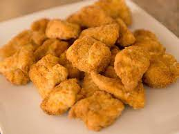

Chicken Nuggets Recipe

Ingredients
- 50g plain flour 0
- ½ tsp garlic powder
- ½ tsp smoked paprika
- 1-2 eggs, beaten
- 120g panko breadcrumbs
- 3 chicken breasts (about 600g), cut into bite-size pieces
- ketchup, to serve
Instructions
- Step 1Combine the flour, garlic powder, paprika, ½-1 tsp salt and a few cracks of freshly ground black pepper on a plate. Tip the beaten egg onto another plate and the breadcrumbs onto a third.
- Step 2 Toss the chicken pieces in the flour mix, then the egg, and finally the breadcrumbs. Set aside on a tray. Heat the air-fryer to 200C,
then cook the chicken nuggets in a single layer (you may need to do this in batches) for 10-12 mins until cooked through and golden brown. Serve with ketchup, if you like.
More Recipes!